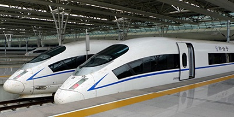

The United States Locomotive Historical Society (LHS) was established in 1829, after the opening of the Baltimore and Ohio Railroad in 1828. We keep keep extensive records on railroads in the US and how these railroads have played a major part in shaping U.S. history.

We operate a mueseum dedicated to locomotive history and technology, located in Small Town, USA. We have five showrooms whose displays rotate quarterly. These showrooms feature interactive and informative events about trains in American History.
Current Exhibits:
- The Central Pacific Room : The Original
- An introduction to steam locomotives.
- The Union Pacific Room : Passanger Cars
- See one of the first passenger cars, Side-by-side with a modern passenger car.
- The Erie Room : Take the Conductor's Seat
- Step inside an old school steam engine take charge. Our conductor simulation lets you hit the rails!
- The Southern Pacific Room : The Gallery
- A collection of American art involving trains, from the Industrial Revolution to today.
- The Great Northern Room : History of Locomotives
- An immersive history of Locomotives in the U.S.
Ticket Prices for our Exhibits:
- General Admission: $7.00
- Students, Seniors, and Service Members: $4.00
- Children under 5 and LHS Members: Free